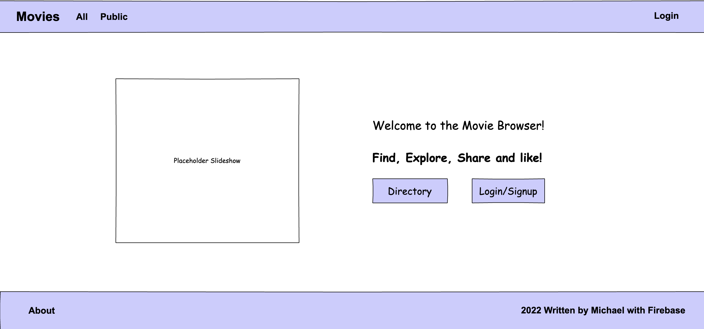
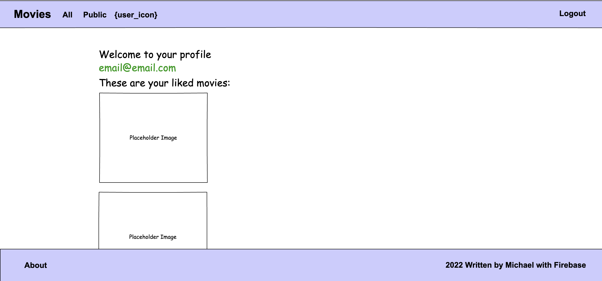
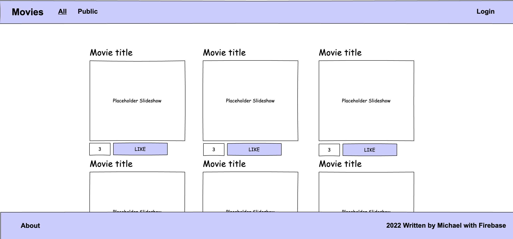
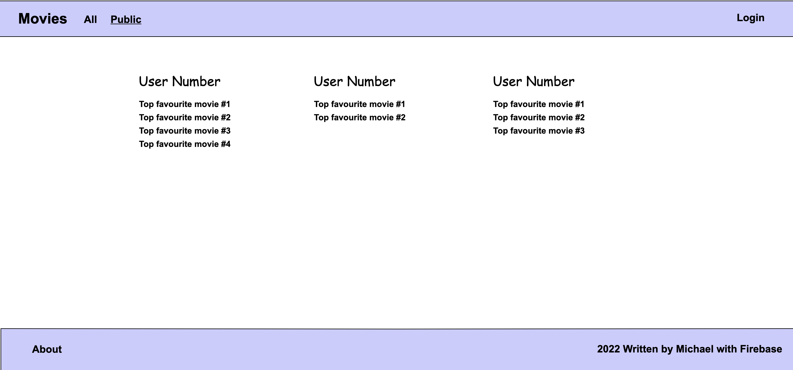
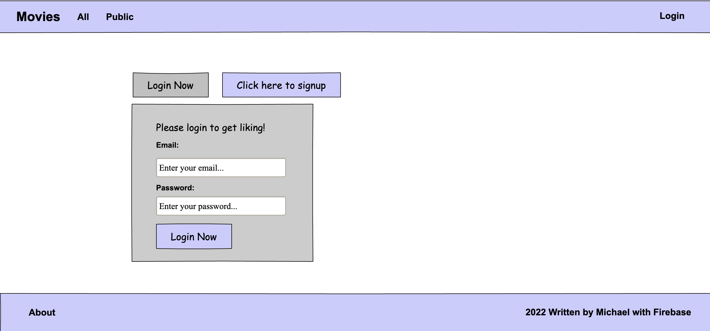

Movie Explorer
This is the movie explorer project prototype details and mockups.
By: Michael
Application Overview
A movie browser social paltform to save favourite movies, show off your favourites with public profiles, browse movies and search movies.
User Stores
- 1As an End-User, I'd like to save my favourite movies after logging in so I can refer back to my saved movies.
- 2As an End-User, I'd like to be able to search for new movies so I can find something to watch.
- 3As an adminstrator, I'd like to be able to update the initial landing page with different movies so I can change the first movies people see on a routine basis.
- 4As an adminstrator, I'd like to be able set the slideshow from the firestore database.
- 4As an End-User, I'd like to be able view image previews using the lity lightbox.
- 5As an End-User, I'd like to be able to set my profile image as a movie image url.
- 6As an adminstrator, I'd like to use Firebase as the backend for authentication so that users can signup and login to the movie browser.
- 7As an adminstrator, I'd like to use Firebase as the backend for database storage so that users can save their favourites and have a public profile.
- 8As an adminstrator, I'd like to have a seperate collection on firebase for configuration of the site so that the frontend can render certain pages directly integration with a backend collection for configuration.
- 9As an adminstrator, I'd like to have the frontend escape user input that goes to firestore for security.
- 10As an End-User, I'd like to vote on movies in the directory so that people can compare the highest voted favourites.
- 11As an adminstrator, I'd like to be able to have an admin panel for syncing new movies to the database based on a search query.
Intention to make use of Firebase
This web app will use Firebase to handle authentication and usage as a backend database with Firestore.
It will allow users to signup and login. It will also allow users to be able to save movies that are listed on the browser which is handled by the administrator who synces movie data using an API into the database.
Firestore will also be used for an initial configuration collection which stores the movies to display in a slideshow, and holds the synced movie collection data. The administrator will be in charge of searching for new movie keywords from the API and storing those document objects into the database. The frontend will then hold the movies on a directory page for users to save and vote on.
Main landing page mockup

Profile mockup

Directory Page

Profiles Directory Page

Login Page
